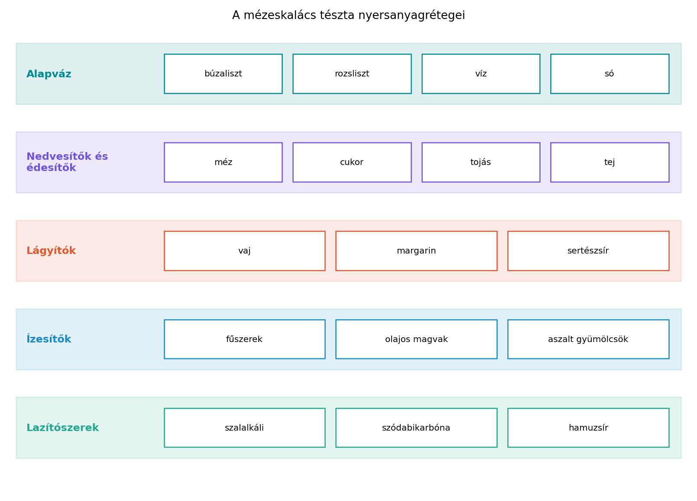

Egy hajnali mézeskalács-üzemben a pék a következő rendelést kapja: 200 darab klasszikus mézeskalács szív, amelynek puha, mégis jól faragható tésztája friss méz, búzaliszt, tojás, fűszerek és kémiai lazítószer pontos arányától függ. Ha a méz túl kristályos, a tészta egyenetlen lesz; ha a szalalkáliból többet mérnek, a termék ammóniaszagú és lyukacsos lesz; ha a diót a gluténmentes termék vonalán dolgozzák fel, keresztszennyeződés léphet fel. A mézeskalács nyersanyagainak ismerete nem elméleti lexikontudás, hanem az üzemi munka biztonságának és a termékminőségnek az alapja. Ebben az alfejezetben a mézes tésztához használt anyagokat és a kémiai lazítószereket tanuljuk meg úgy, hogy utána az A mézeskalácsüzem helyiségei, gépei és szerszámai alfejezetben értsd, miért kell a lazítószereket külön, zárható szekrényben tárolni, a Érlelés, lazítás, összegyúrás és ízesítés alfejezetben pedig pontosan adagolni tudd őket.
A mézeskalács tészta nyersanyagait öt rétegre bontjuk: alapváz (liszt, víz, só), nedvesítők és édesítők (méz, cukor, tej, tojás), lágyítók (zsiradékok), ízesítők és lazítószerek. A lazítószerek nem ízesítők, hanem a tészta szerkezetét alakító anyagok. A következő rétegábra ezt a felépítést mutatja.

Az ábra szemlélteti, hogy a lazítószereket külön csoportként kell kezelni: kis mennyiségben, pontos mérleggel adagoljuk, mert túladagolásuk élelmiszer-biztonsági és érzékszervi hibát okoz.
Definíció. Mézeskalács. A mézeskalács (mézes sütemény) mézzel, cukorral, liszttel, tojással, zsiradékkal és fűszerekkel készült, kémiai lazítószerekkel lazított, sütött tésztakészítmény. A hagyományos mézeskalács tésztát napokig vagy hetekig érlelik, ami fokozza az ízét. A mézeskalács készítésére a Magyar Élelmiszerkönyv sütőipari termékekre vonatkozó előírásai és irányelvei tartalmaznak követelményeket (ellenőrizendő: hatályos MÉ- előírásszám és termékleírás).
Definíció. Kémiai lazítószer. Olyan élelmiszeripari anyag vagy keverék, amely a tésztában nedvesség és/vagy hő hatására kémiai reakcióval gázt (elsősorban szén-dioxidot, esetleg ammóniát) fejleszt, és ezzel pórusos bélzetet alakít ki. A kémiai lazítószerek nem élő szervezetek, ezért a kelesztésük nem függ az élesztő életkörülményeitől. A kémiai lazítószereket a 1333/2008/EK rendelet szerinti élelmiszer-adalékanyagokként, a Magyar Élelmiszerkönyv előírásai és a gyártmánylap szerint kell használni (ellenőrizendő: hatályos adalékanyag-engedélyezés és maximális adagolás).
Definíció. Szalalkáli (szarvasagancssó). A sütőiparban hagyományosan használt ammónium-hidrogén-karbonát (NH₄HCO₃) vagy ammónium-karbonát ((NH₄)₂CO₃) alapú kémiai lazítószer. Hő hatására ammóniagázra, szén-dioxidra és vízre bomlik. A felszabaduló ammónia a sütés során elillan, de a nyers tésztánál szagérzékelés és légúti irritáció léphet fel. Figyelem. A szalalkáli ammóniagőzt fejleszt; csak jól szellőző helyen, a gyártói biztonsági adatlap szerint, védőkesztyűvel szabad kezelni.
Definíció. Nátrium-hidrogén-karbonát (szódabikarbóna, NaHCO₃). Enyhe lúgosságú kémiai lazítószer, amely savas közegben vagy magas hőmérsékleten szén-dioxidot fejleszt. A szódabikarbóna a mézeskalácsban a méz és a barna cukor savasságát felhasználva lazít, de önmagában lúgos mellékízt hagyhat, ha nincs elegendő sav a reakcióhoz.
Definíció. Hamuzsír (kálium-karbonát, K₂CO₃) és sziksó (nátrium-karbonát, Na₂CO₃). Lúgos kémhatású sók, amelyek a tésztát sötétebbé, puhábbá teszik, és befolyásolják a lazítószer működését. A hamuzsír hagyományos mézeskalács eljárásokban a méz savasságát tompítja és a tészta színét mélyíti. A sziksó (mosószóda) erősen lúgos, élelmiszeripari felhasználása szigorúan csak megengedett tisztaságú anyaggal történhet.
A méz a mézeskalács névadó nyersanyaga. Összetétele elsősorban monoszacharid: glükóz (szőlőcukor) és fruktóz (gyümölcscukor), 15–20% víz, kis mennyiségben ásványi anyagok, enzimek, szerves savak, pollenek. A méz édes íze, aromaanyagai és vízmegkötő képessége miatt a tészta hosszabb ideig puha marad, a termék héja pedig szebben barnul a Maillard-reakció révén. A méz savassága (pH-ja jellemzően 3,5–5,0) elősegíti a szódabikarbóna reakcióját, ezért a mézes tésztákban gyakran elegendő a szódabikarbóna, de a hagyományos mézeskalács a szalalkáli gázfejlődését is használja.
A méz minőségét a Magyar Élelmiszerkönyv mézről szóló előírása, továbbá a fogyasztói tájékoztatás szabályai rögzítik (ellenőrizendő: hatályos MÉ- előírásszám és 1169/2011/EU rendelet jelölési szabályok). A pék a méz átvételekor ellenőrzi a színét, illatát, folyósságát, és ha képes, a víztartalmát. A magas víztartalmú méz hajlamos erjedésre, ezért hűvös, száraz helyen, jól záró tartályban tárolandó.
Kristályosodás. A mézben lévő glükóz természetes módon kristályosodhat; a kristályos méz nem romlott, csak állagában megváltozott. A kristályos mézet felhasználás előtt enyhén melegíthetjük, legfeljebb 35–40 °C-on, kíméletesen, hogy az enzimek és aromák ne károsodjanak (ellenőrizendő: üzemi technológiai előírás a maximális melegítési hőmérsékletről). A túlmelegített méz elveszíti jellegzetes illatát, és nő a hidroximetil-furfurol (HMF) tartalma.
A méz mellett a mézeskalács tésztába cukrot is teszünk: kristálycukrot, porcukrot, barnacukrot, invertcukrot vagy glükózszirupot. A cukor a tészta édes ízét, színét és állagát adja; a kristálycukor a dagasztás során részben oldódik, a porcukor a tésztát finomabbá teszi. A barnacukor és a melasztartalmú cukrok sötétebb színt, karamellás jegyet adnak. A cukor lisztre vetített aránya a mézeskalács tésztában jellemzően 30–80% lehet, a termék típusától függően (ellenőrizendő: gyártmánylap, tanulási példa). A magas cukortartalom a tésztát lágyabbá, nyújthatóbbá teszi, de a sütésnél fokozott barnulással kell számolni.
A mézeskalács tészta lisztje általában gyengébb sikértartalmú búzaliszt (pl. BL 55, BL 80), mert a tésztát nem kelesztjük biológiailag, hanem a kémiai lazítás és az érlelés alatt fellazuló szerkezet adja a minőséget. Az erős sikér túlzottan rugalmas, nehezen nyújtható tésztát adna, amely sütés után kiszáradó, kemény héjú terméket eredményezhet. Rozslisztet is gyakran használnak, mert a rozsliszt enzimjei és pentozánjai nedvességet tartanak, a mézeskalácsnak jellegzetes, mélyebb ízt adnak. Az összetételben a rozsliszt aránya akár 20–50% is lehet (ellenőrizendő: gyártmánylap, tanulási példa).
A liszt hamutartalma (típusa) befolyásolja a színt és az ásványianyag-tartalmat. A teljes kiőrlésű liszt sötétebb, karakteresebb, de rövidebb ideig eltartható. A mézeskalács lisztjét mindig száraz, hűvös raktárban tároljuk, mert a liszt a nedvességet és az idegen szagokat erősen megköti. Higiénia. A liszt átvételekor a zsákok sértetlenségét, a kártevők nyomát és a penészes csomósodást ellenőrizni kell; a liszt nem lehet dohos, erjedt szagú.
Továbbvitt eredmény. A liszt sütőipari tulajdonságait az A liszt technológiai tulajdonságai alfejezet tárgyalta; a mézeskalácshoz választott lisztre vonatkozó gyakorlati szempontokat itt alkalmazzuk. A későbbi Érlelés, lazítás, összegyúrás és ízesítés alfejezet a liszt nedvességfelvételét és a tészta állagát használja fel.
A tojás a mézeskalács tésztában többfelé hat: a sárgája lecitinje emulgálja a zsiradékot és a vizet, a fehérje kissé keményíti a szerkezetet, a tojás színe és íze pedig javítja a terméket. A tojás lehet friss héjas tojás vagy pasztőrözött tojáslé. A héjas tojást használat előtt mindig fel kell ütni és külön edényben ellenőrizni, mert a sérült, záp tojás az egész tételt tönkreteheti. HACCP. A tojás és tojáslé hűtve (legfeljebb 5 °C) tárolandó; a mézeskalács bélzete a sütés végén érje el a technológiai lapon rögzített maghőmérsékletet (tanulási érték kb. 90–96 °C; vékony lapoknál a sütési idő és a szín is ellenőrzendő); a legalább 75 °C a tojásos vagy túrós töltelék közepére és az újramelegítésre vonatkozó tanulási érték (ellenőrizendő: az üzem HACCP-terve és a hatályos előírás).
Allergén. A tojás a 1169/2011/EU rendelet II. melléklete szerinti fő allergén, ezért a csomagolt mézeskalács jelölésén kiemelten szerepeltetni kell. A tojást és a tojástartalmú nyersanyagot a nem tojásos termékek gyártósorától, eszközeitől elkülönítve kell kezelni, hogy keresztszennyeződés ne forduljon elő.
A tej és tejtermékek (tej, tejpor, vaj, tejszín) ízt, színt és lágy bélzetet adnak. A tejport gyakran használják, mert hosszabb ideig eltartható és pontosan adagolható. A tejcukor (laktóz) a héjszínt barnítja. A tejet és tejterméket ugyancsak hűtve kell tárolni, és allergénként kell jelölni. Allergén. A tej allergén; a laktózmentes állítás csak akkor alkalmazható, ha a termék laktóztartalma a hatályos előírás szerinti határérték alatt van (ellenőrizendő: 1169/2011/EU rendelet és nemzeti útmutatók).
A zsiradékok (vaj, margarin, sertészsír) a tészta lágyítását, az íz és a héj színét adják. A vaj jellegzetes tejszínes ízt és omlósabb állagot ad, a margarin hosszabb eltarthatóságot és könnyebb bedolgozhatóságot, a sertészsír hagyományos, fényesebb felületet. A zsiradékot hidegen, de nem fagyasztva célszerű a tésztához adni, hogy a tészta ne ragadjon. Figyelem. A zsiradékok gyúlékonyak; forró kemence közelében ne tároljunk olvadt vajat vagy zsiradékot.
A mézeskalács ízesítői a jellegzetes fűszerkeveréken alapulnak: fahéj, szegfűszeg, szerecsendió, gyömbér, kardamom, ánizs, korlander, esetleg bors. A fűszereket őrölve vagy egészben tároljuk, és felhasználás előtt lehetőleg frissen daráljuk, mert az illóolajok idővel csökkennek. A fűszereket száraz, sötét, hűvös helyen, légmentesen zárva kell tárolni.
Az olajos magvak (dió, mandula, mogyoró, esetleg szezámmag) a tészta ízét és ropogósságát adják. Allergén. A diófélék, a földimogyoró és a szezámmag a 1169/2011/EU rendelet II. melléklete szerinti fő allergének; jelölésük kötelező. Az olajos magvakat tartalmazó termékek gyártósorát el kell különíteni a „mentes” termékek vonalától, mert a magvak pora és olaja könnyen keresztszennyez. A magvakat felhasználás előtt válogatni, szárazon vagy enyhén pirítva előkészíteni; a pirítás során folyamatosan keverni kell, mert a magvak könnyen megégnek.
Az aszalt gyümölcsök (mazsola, datolya, füge, vörösáfonya, citrom- és narancshéj) nedvességet, savasságot és gyümölcsös ízt adnak. Használat előtt ellenőrizni kell a kocsányokat, magokat, esetleges idegen anyagokat, és a nagyobb darabokat aprítani. A cukrozott gyümölcshéjat (cukrozott narancshéj) előzetesen meleg vízben át lehet öblíteni, hogy a felesleges cukorbevonat leoldódjon. Higiénia. Az aszalt gyümölcsök nedves felülete mikroorganizmusok szaporodását segítheti; a tárolóedényt hűvös, száraz helyen, lezárva kell tartani.
A mézeskalács tésztában a biológiai lazítás (élesztő) általában nem használható, mert a méz és cukor magas koncentrációja ozmotikus nyomással gátolja az élesztőt, a hosszú érlelés pedig kimerítené a sejteket. Ezért kémiai lazítószereket alkalmazunk. A kémiai lazítószerek a következőképpen működnek:
Ammónium-hidrogén-karbonát (szalalkáli, szarvasagancssó). Hő hatására bomlik: Az ammóniagáz és a szén-dioxid a tésztát lazítja. Az ammónia a sütés közben eltávozik, ezért a késztermékben nem maradhat – feltéve, hogy a termék vékony, és a sütési idő elegendő. Vastag tésztáknál az ammónia nem tud teljesen távozni, szaghibát okoz. Figyelem. A nyers tésztából felszabaduló ammónia irritálja a szemet és a légutakat; a szalalkálit csak jól szellőző helyen szabad kimérni, és a tésztát nem szabad zárt edényben állni hagyni a reakció megindulása után.
Ammónium-karbonát. Hasonlóan bomlik, de már szobahőmérsékleten is lassan ammóniát ad le, ezért jól záró tartályban, hűvös helyen kell tárolni. Reakciója egyszerűsítve:
Nátrium-hidrogén-karbonát (szódabikarbóna, NaHCO₃). Sav jelenlétében vagy hevítve bomlik: A mézes tésztában a méz természetes savtartalma segíti a szén-dioxid felszabadulását. Ha nincs elég sav, a megmaradt szóda lúgos, kesernyés utóízt ad.
Kálium-karbonát (hamuzsír, K₂CO₃) és nátrium-karbonát (sziksó, Na₂CO₃). Erős lúgok; a tésztában a glutén duzzadását és a Maillard-reakciót befolyásolják, sötétebb színt és puhább bélzetet adnak. Közvetlen lazítóhatásuk kisebb: az érlelés alatt a méz savaival reagálva lassan szén-dioxidot fejlesztenek, a sikért lágyítják, a színt mélyítik. A pH-t emelik, ezért a szódabikarbónával együtt adagolva a sav-egyensúlyt a gyártmánylap szerint kell beállítani. Figyelem. A hamuzsír és a sziksó erősen lúgos, maró hatású; csak élelmiszer-minőségű anyagot, védőkesztyűvel és védőszemüveggel szabad használni.
A kémiai lazítószereket mindig mérlegen, a gyártmánylap szerint adagoljuk. A szalalkáli adagja a mézeskalács tésztában lisztre vetítve jellemzően 0,2–1,0%, a szódabikarbónáé 0,5–1,5%, a hamuzsíré 0,1–0,5% lehet (ellenőrizendő: gyártmánylap, a termék típusa és a hatályos adalékanyag-előírás). A túl nagy szalalkáli adag a tésztában buborékos, egyenetlen lyukacsosságot és ammóniaszagot okoz; a túl kevés lapos, tömör terméket ad.
A nyersanyagok előkészítése során a cél: egyenletes, csomómentes, jól kezelhető massza. A műveletek lépései:
Higiénia. A mézeskalács-üzemben a munka megkezdése előtt a pék tiszta munkaruhát, hajhálót vesz, ékszert, órát, műkörmöt nem visel, a kezét fertőtlenítő szappannal megmossa. A munkafelületet, a mérlegeket, az edényeket fertőtlenítőszerrel letisztítja és hagyja megszáradni. A kémiai lazítószereket tartalmazó edényeket nem szabad élelmiszer tárolására használni.
1. példa – Szalalkáli adagolása egyszerű tételben. A gyártmánylap szerint a mézeskalács tésztához a lisztre vetítve 0,8% szalalkálit kell adni. A dagasztáshoz 25,0 kg búzalisztet használunk. Mennyi szalalkáli szükséges?
Adott: , szalalkáli aránya a lisztre. Keresett: .
Képlet:
Ellenőrzés: 25 kg 1%-a 0,25 kg, tehát 0,8% kb. 0,2 kg; nagyüzemi mérlegen 0,001 kg pontossággal kimérhető. A szalalkálit a porcukorral előkeverve, száraz anyagként adjuk a tésztához. ∎
2. példa – Szódabikarbóna reagál a méz savasságával. Egy recept 10,0 kg mézet és 1,2% (lisztre vetítve) szódabikarbónát ír elő. A méz víztartalma 17%, a liszt kémhatása közel semleges, így a szódabikarbónához szükséges savat főleg a méz (és a barna cukor) adja. A pék azt tapasztalja, hogy a tészta sütés közben kevésbé emelkedik, és a késztermék kesernyés. A hiba oka valószínűleg a szóda túladagolása vagy a méz alacsony savtartalma. Javítás: csökkentse a szódabikarbónát 0,8%-ra, vagy adjon 0,2% citromsavat a tésztához, és végezzen próbasütést.
A példa tanulsága: a kémiai lazítószer pontos adagolása mellett a nyersanyagok savasságát is figyelni kell. ∎
3. példa – Allergén keresztszennyeződés vizsgálata. A mézeskalács üzemben diós és diómentes tételeket is gyártanak. A pék a diós tészta dagasztása után ugyanazzal a kézzel a diómentes tételt is előkészíti. Ez keresztszennyeződést okoz. Helyes gyakorlat: először a diómentes tételt készíteni, majd a diósat, és a váltásnál kesztyűt cserélni, az eszközöket mosogatószerrel elmosni, fertőtleníteni, és minden érintkező felületet ellenőrizni. Allergén. A diófélék jelenléte csak akkor kerülhető el, ha a gyártási sorrendet és a takarítást írásban rögzítik, és a dolgozók betartják. ∎
Előírás. A kémiai lazítószerek élelmiszer-adalékanyagok, amelyeket a 1333/2008/EK rendelet és a Magyar Élelmiszerkönyv adalékanyagokról szóló előírása szabályoz. Az adalékanyagot a gyártmánylapban megadott mennyiségben, a tészta összetételére és a termékcsoportra engedélyezett maximális szintig szabad használni. A felhasznált anyagok tisztasági követelményeit az élelmiszer-adalékanyagok specifikációi tartalmazzák. A méz termékjelölésére a fogyasztók tájékoztatásáról szóló 1169/2011/EU rendelet és a Magyar Élelmiszerkönyv előírásai vonatkoznak; a méznek mint önálló terméknek a jelölésére (például származási ország) a méz-irányelv és a Magyar Élelmiszerkönyv vonatkozik; a mézeskalács jelölésében a méz összetevőként, a névre utaló összetevőknél mennyiségével szerepel (ellenőrizendő: 2001/110/EK, 1169/2011/EU). Allergén. A tojás, tej, glutén, diófélék, földimogyoró, szezámmag és kén-dioxid/szulfit a 1169/2011/EU rendelet II. melléklete szerinti allergének; a csomagolt terméken ezeket kiemelve kell feltüntetni. (ellenőrizendő: a rendeletek aktuális szövege, a MÉ- előírásszámok, az adalékanyagok maximális szintjei.)
Egy kisüzemi mézeskalácsos-üzem reggelén a pék régi, megszokott recept szerint készítette a mézes tésztát. Aznap azonban új alapanyag-beszállítótól érkezett a méz, és a tészta sütés után szokatlanul sötét, kesernyés héjú lett, néhány darab belseje tömör maradt. A pék ellenőrizte a méz savfokát, és kiderült, hogy az új méz enyhébb, kevésbé savas volt, mint a korábbi. A szódabikarbóna adagját a régi mézhez állította be; a kevesebb sav miatt a szóda nem fejlődött el teljesen, lúgos mellékízt is adott. A helyesbítés: a szódabikarbóna adagját 1,2%-ról 0,8%-ra csökkentették, és 0,2% citromsavat adtak a tésztához. Ettől a héj színe és a bélzet lyukacsossága visszaállt a megszokottra. A tanulság: minden új szállítmány mézet és lisztet minőségi próbával, próbasütéssel kell ellenőrizni, mert a nyersanyagok természetes ingadozása a kémiai lazítást is megváltoztatja.
A mézeskalács nyersanyagok átvételekor és felhasználáskor a következőket kell ellenőrizni:
Minőségi eltérés esetén a tételt el kell különíteni, és a felelős vezetővel egyeztetni, hogy az anyag felhasználható-e.
Szalalkáli túladagolás. Tünet: a nyers tészta erős ammóniaszagú, sütés után a termék belsejében buborékok maradnak, és kesernyés, szúrós szag érződik. Ok: a mérleghiba vagy a lisztre vetített százalék rossz alapja. Megelőzés: a szalalkálit mindig külön, hiteles mérlegen mérjük, és a gyártmánylaphoz képest ellenőrizzük. Javítás: a túladagolt tételben a lazítószer aránya nem állítható vissza pontosan, és az adalékanyag-felhasználás túllépheti a gyártmánylapot, ezért a tételt a HACCP-terv szerint vissza kell tartani és dönteni (selejt vagy – ha a gyártmánylap engedi – arányos hígítás új tésztával; ellenőrizendő). Szalalkálinál a nyers tészta enyhe ammóniaszaga normális; a szúrós, a gyártmánylaphoz képest erős szag a hibára utal. A következő tételnél pontosabban mérünk.
Kristályos méz túlmelegítése. Tünet: a méz sötét, karamellizált, kesernyés, HMF-tartalma magas. Ok: 60–80 °C fölé melegített méz. Megelőzés: a mézet legfeljebb 40 °C-on, kíméletesen olvasztjuk. Javítás: a túlmelegített mézet már nem érdemes mézeskalácsba tenni; kisebb adagoknál esetleg más termékhez használható, de ezt a minőségügyi felelős dönti el.
Allergén keresztszennyeződés. Tünet: a csomagolt diómentes mézeskalács vizsgálata dió nyomait mutatja. Ok: a diós tészta után a gépet, asztalt, kezet nem takarították megfelelően. Megelőzés: külön eszközök, gyártási sorrend, a takarítás dokumentálása, a dolgozók képzése. Javítás: a szennyezett tételt vissza kell tartani, átcímkézni, vagy ha a jelölés nem volt megfelelő, a termék visszahívása szükséges.
Szódabikarbóna mellékíz. Tünet: a mézeskalács kesernyés, sötét héjú, enyhén szappanos. Ok: a szóda nem reagált el teljesen, mert a tésztában kevés a sav, vagy túl sok a szóda. Megelőzés: a szódabikarbónát a méz és a barna cukor savasságához igazítjuk, szükség esetén kevés citromsavat vagy borkősavat adunk hozzá. Javítás: a következő tételnél csökkentjük a szóda adagját, vagy növeljük a savasságot.
1. feladat (A). Fogalmazd meg, mi a különbség a szalalkáli és a szódabikarbóna lazítóhatása között a mézes tésztában!
2. feladat (A). Egy mézeskalács üzemben 15,0 kg búzaliszthez 0,6% szalalkálit és 1,0% szódabikarbónát adnak. Mennyi szalalkáli és mennyi szódabikarbóna szükséges grammban?
3. feladat (B). A gyártmánylap szerint a mézes tésztában a liszt 40%-a rozsliszt, 60%-a BL 55 búzaliszt. A dagasztáshoz összesen 30,0 kg lisztet használunk. Mennyi rozslisztet és mennyi búzalisztet mérjünk ki? A szalalkáli adagja 0,8% az összes lisztre; mennyi szalalkáli szükséges?
4. feladat (B). Egy receptben 10,0 kg méz, 20,0 kg liszt, 5,0 kg porcukor és 1,2% (lisztre vetítve) szódabikarbóna szerepel. A pék a méz savassága miatt a szóda 30%-át citromsavval szeretné semlegesíteni. Számítsd ki: (a) mennyi a szódabikarbóna tömege, (b) mennyi citromsav szükséges, ha 1 mol (háromértékű) citromsav 3 mol szódabikarbónát semlegesít (moláris tömeg: NaHCO₃ = 84 g/mol, citromsav = 192 g/mol)? (Egyszerűsített, tanulási példa.)
5. feladat (C). Egy üzemben diós mézeskalácsot és sima mézeskalácsot is gyártanak. Tervezd meg a gyártási sorrendet és a takarítási lépéseket, hogy a sima termék diómentes maradjon! Melyek a kritikus ellenőrzési pontok?
6. feladat (D). Menj be a tanpékség anyagraktárába, és válassz ki egy kémiai lazítószert! Olvasd el a biztonsági adatlapot, és írj három konkrét munkavédelmi szabályt a kezelésére! Ezután végezz próbamérést: mérj ki 10,0 g szódabikarbónát, és ellenőrizd a mérleg pontosságát egy második, hiteles mérleggel!
Önellenőrzés – válaszok
Hamis. A szalalkáli ammónium-hidrogén-karbonát (vagy ammónium-karbonát), a szódabikarbóna nátrium-hidrogén-karbonát. A szalalkáli ammóniát és szén-dioxidot fejleszt, a szóda csak szén-dioxidot, és melléktermékként nátrium-karbonátot.
A méz enzimjei és aromái 40 °C fölött károsodnak, a fruktóz karamellizálódhat, és a méz HMF-tartalma nő. Ettől a méz kesernyés, sötét, romlott minőségű lesz.
Kémiai lazítószerek: szalalkáli (ammónium-hidrogén-karbonát), ammónium-karbonát, szódabikarbóna (nátrium-hidrogén-karbonát), hamuzsír (kálium-karbonát), sziksó (nátrium-karbonát). A szalalkáli hőbomlása:
Allergén: tojás, dió, tej. A rozsliszt glutént tartalmazó gabona: a glutént tartalmazó gabonafaj nevét (rozs) kell kiemelni az összetevők között, nem elég „glutén”-t írni; a fahéj és a szalalkáli általában nem allergén. Kiemelés szükséges: tojás, tej, dió (és a rozs mint glutént tartalmazó gabona).
A lisztre vetített százalék:
A dagasztás utáni erős ammóniaszag szalalkáli túladagolásra vagy a tészta túl korai feldolgozására utal. A tésztát nem szabad zárt helyen tartani; jól szellőző helyen pihentetjük, és a következő tételnél újra mérjük a szalalkálit. A már megdagasztott tételt vissza kell tartani, és a HACCP-terv szerint dönteni (selejt vagy a gyártmánylap szerinti átdolgozás).
Feladatok megoldásai
A mézeskalács nyersanyagai öt csoportba sorolhatók: alapváz (liszt, víz, só), nedvesítők és édesítők (méz, cukor, tojás, tej), lágyítók (vaj, margarin, sertészsír), ízesítők (fűszerek, magvak, aszalt gyümölcsök), lazítószerek (szalalkáli, szódabikarbóna, hamuzsír). A méz főleg glükózt és fruktózt tartalmaz; kristályosodása természetes, és legfeljebb 40 °C-on, kíméletesen olvasztható. A mézes tésztához gyengébb sikérű búzalisztet vagy rozslisztet használunk. A kémiai lazítószerek közül a szalalkáli (ammónium-hidrogén-karbonát) hőre ammóniát és szén-dioxidot fejleszt; a szódabikarbóna (nátrium-hidrogén-karbonát) sav jelenlétében szén-dioxidot; a hamuzsír és a sziksó lúgos sók, amelyek a színt és az állagot befolyásolják. A lazítószereket pontosan, mérlegen, a gyártmánylap szerint kell adagolni; a szalalkáli ammóniagőze miatt jól szellőző helyen, védőkesztyűvel dolgozzunk. Allergén. A tojás, tej, glutén, diófélék, földimogyoró, szezámmag és szulfit a 1169/2011/EU rendelet szerinti allergének, ezért jelölni kell őket, és a keresztszennyeződést gyártási sorrenddel, elkülönített eszközökkel és dokumentált takarítással kell megelőzni. Továbbvitt eredmény. A mézes nyersanyagok és a kémiai lazítószerek ismerete az A mézeskalácsüzem helyiségei, gépei és szerszámai alfejezetben a berendezések elhelyezéséhez, a Érlelés, lazítás, összegyúrás és ízesítés alfejezetben pedig a lazítószer pontos bekeveréséhez és a tészta minőségéhez szükséges. ∎